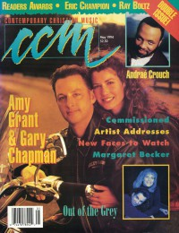

CMnexus: Contemporary Christian culture, music, and media.
|
|
Gary ChapmanOn the cover|  | May 1994
CCM | Media coverage:- Jun 1981 in CCM "Talent: The Young Man Behind "My Father's Eyes"", by Don Cusic
- Dec 1981 in Charisma "News: Combining Talents In Marriage"
- Dec 1981 in Campus Life "Impressions: Gary Chapman", by Bob Sperlazzo, Jim Long
- Sep 1985 in CCM "People & Places: The Amy & Gary Show"
- Mar 1988 in Campus Life "Expressions: Gary Chapman", by Jim Long
- May 1988 in CCM "Gary Chapman", by Walt Quinn
- Jun 1988 in Charisma "Amy Grant & Gary Chapman: Harmony At Home", by Steve Lawson
- Sum 1988 in Harvest Rock Syndicate "Gary Chapman's Everyday Manner", by Mark Eischer
- Feb 1989 in CCM "In Concert: Memorial Coliseum, Warwick, RI", by Michele Bollman
- Jan 1990 in Campus Life "The Real Gary Chapman", by Jim Long
- Jan 1991 in CCM "Christian Musician: The Bassic Stuff", by Lucas W. Hendrickson
- Feb 1994 in CCM "Five Christian Music Couples on Getting Together and Staying Together", by Randy S Rocker
- Apr 1994 in Campus Life "Just The Facts: Gary Chapman", by Michael Long
- Apr 1994 in Campus Life "Expressions: Gary Chapman", by Jim Long
- May 1994 in CCM "Life On The Riverstone Farm", by Mark Tucker
- May 1994 in CCM "Hog Heaven", by April Hefner, Gregory J Rumburg
- Jan 1995 in CCM "Conversations: A Sweet Glow of Mercy", by Jim Long
- Mar 1995 in CCM "In Concert: Barton Coliseum, Little Rock, AR", by Kevin Reese
- May 1995 in CCM "Integrity and Christian Music: All In The Family", by Mark A Smeby
- Mar 1996 in CCM "When It Rains, It Pours!", by Lucas W. Hendrickson
- Oct 1996 in CCM "In The News: TNN Names Gary Chapman Host of 'Prime Time Country'"
- Oct 1996 in CCM "Vote The Rock: Artists as Citizens", by Steve Rabey
- Oct 1996 in CCM "In Concert: Trinity Church, San Antonio, TX", by Laura Harris
- Dec 1997 in CCM "Tradition and Family Make the Holidays Merry", by Jim Long
- Feb 1999 in CCM "On The Beat: Grant, Chapman Announce Separation", by April Hefner, Lindy Warren
- May 1999 in CCM "Heartbreak Hotel", by Melissa Riddle
- Jan 2000 in CCM "The Story of Us", by Melissa Riddle
- Jan 2000 in CCM "Nine Moments that Defined the 90s: Sexual scandals: Michael English, Sandy Patti, Amy Grant & Gary Chapman", by Steve Rabey
- Mar 2002 in CCM "Surprised By Joy: Gary Chapman Unexpectedly Finds Hope", by Lucas W. Hendrickson
- Mar 2002 in CCM "Circles and Seasons", by Lucas W. Hendrickson
Albums & reviews:1981: Sincerely Yours1983: Happenin'... Live1987: Everyday Man1994: The Light Inside1996: Shelter1996: The Early Years1997: This Gift1999: Outside2002: Circles And Seasons2014: The Truth Award Summary (Nominations / Wins)Dove Awards1982 Dove Awards- Song: "I'm Yours"
- Songwriter
1985 Dove Awards1995 Dove Awards1996 Dove Awards1997 Dove Awards2000 Dove AwardsGrammy AwardsBooks about Gary ChapmanPublished articles:1 article credited in CCM: 1995. |